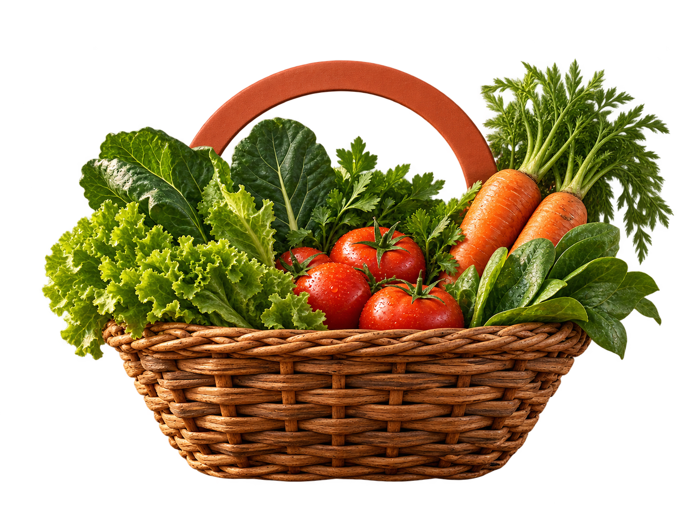
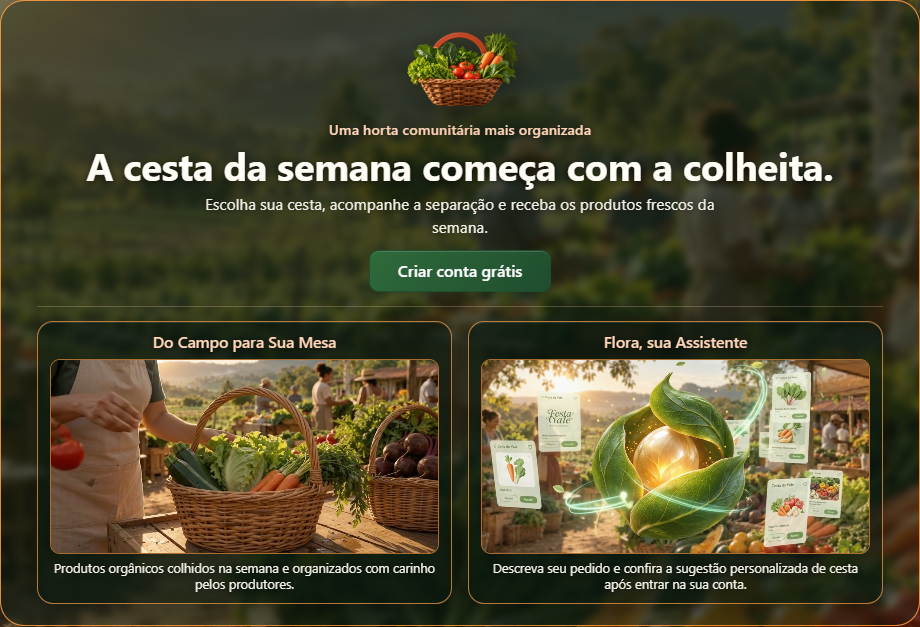

Cesta do Vale
Flora
Aline monta a cesta
“Quero duas alfaces.”
Aline pode digitar ou falar. A transcrição fica disponível para revisão.
Vanderlei planeja a separação
“Quais cestas estão em separação?”
A Flora consulta a situação registrada dos pedidos.
Como a Flora cria o pedido
Jangada → OpenRouter
Gemini pode assumir como provedor alternativo, quando configurado.
cestadovale.vercel.app
ACESSE O SITE
